소방설비산업기사(기계) (2010-05-09 기출문제)
1과목: 소방원론
1. 연소의 4요소란 연소의 3요소에 무엇을 포함시킨 것인가?
- 점화원
- 산소와 반응하여 발열반응 하는 물질
- 공기 중의 산소
- 연쇄반응
(정답률: 87%)

2. 어떤 기체의 확산 속도가 이산화탄소의 2배였다면 그 기체의 분자량은 얼마로 예상할 수 있는가?
- 11
- 22
- 44
- 88
(정답률: 64%)
3. 15℃의 물 1g을 1℃ 상승시키는데 필요한 열량은?
- 1cal
- 15cal
- 1kcal
- 15kcal
(정답률: 63%)
4. 화재이론에 따르면 일반적으로 연기의 수평방향 이동속도는 몇 m/s 정도인가?
- 0.1 ~ 0.2
- .0.5 ~ 1
- 3 ~ 5
- 5 ~ 10
(정답률: 79%)
5. 다음 물질 중 자연발화의 위험성이 가장 낮은 것은?
- 석탄
- 팽창질석
- 셀룰로이드
- 퇴비
(정답률: 77%)
6. 위험물의 저장방법 중 적절하지 못한 방법은?
- 금속칼륨 - 경우 속에 저장
- 아세트알데히드 - 구리용기에 저장
- 이황화탄소 - 수조에 저장
- 알킬알루미늄 - 희석제를 넣어 저장
(정답률: 59%)
7. 금속칼륨이 물과 반응하면 위험한 이유는?
- 수소를 발생하기 때문에
- 산소를 발생하기 때문에
- 이산화탄소를 발생하기 때문에
- 아세틸렌을 발생하기 때문에
(정답률: 73%)
8. 휘발유의 인화점은 약 몇 ℃ 정도 되는가?
- -43 ~ -20℃
- 30 ~ 50℃
- 50 ~ 70℃
- 80 ~ 100℃
(정답률: 77%)
9. 다음 연소 온도별 색상의 종류 중 가장 높은 온도를 나타내는 것은?
- 적색
- 휘백색
- 암적색
- 휘적색
(정답률: 82%)
10. 다음 중 소화의 원리에서 소화형태로 볼 수 없는 것은?
- 발열소화
- 질식소화
- 희석소화
- 제거소화
(정답률: 81%)
11. 제거소화의 방법으로 가장 거리가 먼 것은?
- 아직 타지 않은 가연물을 연소지역에서 다른 안전한 장소로 이동시킨다.
- 미연소 가연물을 다른 빈탱크로 이동시킨다.
- 산불의 확산방지를 위해 산림의 일부를 벌채한다.
- 유류화재시 젖은 이불이나 가마니를 덮는다.
(정답률: 75%)
12. PVC가 공기 중에서 연소할 때 발생되는 자극성의 유독성 가스는?
- 염화수소
- 아황산가스
- 질소가스
- 암모니아
(정답률: 54%)
13. 하론 1301소화약제의 이산화탄소소화약제는 소화기에 충전되어 있을 때 어쩐 상태로 보존되고 있는가?
- 하론1301 : 기체, 이산화탄소 : 고체
- 하론1301 : 기체, 이산화탄소 : 기체
- 하론1301 : 액체, 이산화탄소 : 기체
- 하론1301 : 액체, 이산화탄소 : 액체
(정답률: 58%)
14. 정전기 발생을 억제하기 위한 조치로서 적합하지 않은 것은?
- 공기를 이온화시킨다.
- 상대습도를 70% 이상이 되도록 한다.
- 파이프라인을 통하여 인화성액체를 수송시 유속을 가능한한 빠르게 한다.
- 접지를 시킨다.
(정답률: 78%)
15. 열분해시 독성가스인 포스겐(phosgene) 가스나 염화수소가스를 발생시킬 위험이 있어서 사용이 금지된 할로겐 화합물 소화약제는?
- Halon 2402
- Halon 1211
- Halon 1301
- Halon 104
(정답률: 64%)
16. 내화구조의 기주에서 바닥의 경우 철근콘크리트조로서 두께가 몇 cm 이상인 것이 내화구조에 해당하는가?
- 3
- 5
- 10
- 15
(정답률: 73%)
17. 상태의 변화 없이 물질의 온도를 변화시키기 위해서 가해진 열을 무엇이라 하는가?
- 현열
- 잠열
- 기화열
- 융해열
(정답률: 76%)
18. 숯, 코크스가 연소하는 형태에 해당하는 것은?
- 분무연소
- 예혼합연소
- 표면연소
- 분해연소
(정답률: 76%)
19. 제4종 분말 소화약제는 탄산수소칼륨과 무엇이 화합된 분말인가?
- 제일인산암모늄
- 요소
- 메타인산
- 나트륨
(정답률: 71%)
20. A, B, C급의 화재에 사용할 수 있기 때문에 일명 ABC분말소화약제로 불리는 소화약제의 주성분은?
- 탄산수소나트륨
- 탄산수소칼륨
- 제1인산암모늄
- 황산알루미늄
(정답률: 81%)
2과목: 소방유체역학
21. 단단한 탱크 속에 300kPa, 0℃의 이상기체가 들어있다. 이것을 100℃까지 가열하였을 때 압력 상승은 약 몇 kPa인가?
- 110
- 210
- 410
- 710
(정답률: 39%)
22. 펌프의 공동현상(cavitation)에 관한 설명으로 틀린 것은?
- 소음과 진동이 생긴다.
- 펌프의 효율이 상승된다.
- 깃에 부식이 생긴다.
- 양정과 동력이 급격히 저하한다.
(정답률: 65%)
23. 다음 그림에서 A점의 절대압력은 약 몇 kPa인가? (단, 대기압은 101.3kPa이며, 액체의 비중은 13.6 이고 h=10cm이다.)
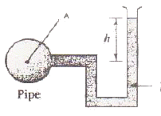
- 101.3
- 103.2
- 110.3
- 114.6
(정답률: 50%)
24. 지름 2cm인 소방노즐에서 물이 5m/s로 화재가 난 자동차에 분사된다. 이때 자동차가 10m/s로 움직이고 있다면 분사되는 물이 자동차에 가하는 힘은 약 몇 N 인가?
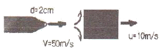
- 784
- 78.4
- 502
- 50.2
(정답률: 36%)
25. 유체의 밀도를 ρ, 비중량을 r, 중력 가속도를 g라 할 때 이들 사이의 관계는?
- r=ρㆍg
- ρ=rㆍg
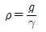
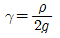
(정답률: 57%)
26. 직경이 5mm인 원형 직선관 내에 0.2×10-3m3/min의 속도로 물이 흐르고 있다. 유량을 두 밸 하기 위해서는 직선관 양단의 압력차가 몇 배가 되어야 하는가? (단, 물의 동점성셰수는 약 10-6m2/s 이다.)
- 0.71배
- 1.41배
- 2배
- 4배
(정답률: 41%)
27. 그림에서 모든 손실과 표면 장력의 영향을 무시할 때 분류에서 반지름 r의 값은? (단, H는 일정하게 유지된다.)
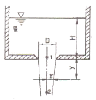
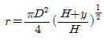
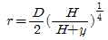
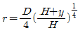
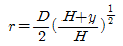
(정답률: 50%)
28. 나무로 만들어진 정육면체 블록을 물 위에 띄웠더니 수면위로 50mm 올라왔다. 비중이 1.35인 글리세린에 이 블록을 띄웠더니 75mm가 올라왔다고 한다. 이 나무의 비중은?(오류 신고가 접수된 문제입니다. 반드시 정답과 해설을 확인하시기 바랍니다.)
- 0.44
- 0.55
- 0.66
- 0.77
(정답률: 41%)
29. 켈빈온도를 화씨온도로 바꾸려면 켈빈온도에 a를 곱한 후 b를 빼면 된다. 여기서 a+b는?
- 461.47
- 459.67
- 213.8
- 33.8
(정답률: 39%)
30. 비원형인 관 내의 수두손실을 계산할 때, 원형관의 직경으로 환산하기 위해 비원형관의 수력직경을
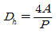
(A: 단면적의 크기, P: 접수길이)로 정의하여 사용한다. 가로, 세로의 길이가 각각 W와 H인 직사각형 덕트의 수력직경은?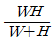
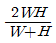
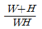
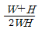
(정답률: 65%)
31. 복사열전달에 대한 설명 중 올바른 것은?
- 방출되는 복사열은 절대온도의 4승에 비례한다.
- 방출되는 복사열은 단위면적에 반비례한다.
- 방출되는 복사열은 방사율이 작을수록 커진다.
- 완전흑체의 경우 방사율은 0 이다.
(정답률: 63%)
32. 온도 60℃, 압력 100kPa인 산소가 지름 10mm 인 관속을 흐르고 있다. 임계 레이놀즈수가 2100일 때 층류로 흐를수 있는 최대 평균속도는 몇 m/s인가? (단, 점성계수는 μ=23×10-6kg/mㆍs 이고, 기체상수는 R=260Nㆍm/kgㆍK 이다.)
- 4.18
- 5.72
- 7.12
- 8.73
(정답률: 41%)
33. 안지름 15cm인 원관 내를 흐르는 유량을 알기 위해서 그림과 같이 피토관을 중심축에 설치하였더니 정압관과 동압관의 수면차가 15cm였다. 관의 평균유속이 중심축 속도의 0.8배라면 이 관을 통해 흐르는 유량은 약 몇 m3/s 인가?
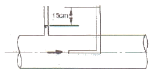
- 0.0242
- 0.0122
- 0.0363
- 0.0498
(정답률: 40%)
34. 매분 1400 회전하는 펌프가 12.6m의 양정에 대하여 0.07m3/s의 유량을 방출한다. 상사 법칙을 만족하면서 매분 1450 회전할 경우 양정은 약 몇 m인가?
- 10.6
- 12.6
- 13.5
- 14.8
(정답률: 48%)
35. 단원자 이상기체인 아르곤(Ar)을 상온으로부터 3000K까지 온도를 높일 경우 정압 비열의 변화를 바르게 설명한 것은?
- 온도가 높이질수록 작아진다.
- 온도가 높아져도 일정하다.
- 온도가 높아질수록 커진다.
- 온도가 높아지면서 커지다 작아진다.
(정답률: 53%)
36. 구형(舊形) 기구의 반지름이 5m이고, 내부압력이 100kPa, 온도가 20℃일 때 기구 내의 공기의 질량은 몇 kg 인가? (단, 공기의 기체상수는 287 J/kgㆍK 이다.)
- 603
- 614
- 622
- 629
(정답률: 37%)
37. 체적 유량에 대한 설명으로 틀린 것은?
- 단면적 일정할 때 속도에 비례한다.
- 단위 면적당 질량 유량을 나타낸다.
- 체적 유량의 차원은 L3T-1(L:길이, T:시간)이다.
- 체적 유량의 단위에는 m3/s 이 있다.
(정답률: 50%)
38. 효율 80%의 펌프가 물을 전양정 20m, 중량유량 0.7 kN/s로 송출하는데 필요한 축동력(shaft power)은 몇 kW인가?
- 12.5
- 14.0
- 16.0
- 17.5
(정답률: 49%)
39. 너비 2m, 높이 4m인 직사각형 수문이 수면과 수직으로 놓여있다. 수문 위 끝이 수면아래 2m 지점에 있다면 이 수문에 가해지는 압력중심은 수면으로부터 약 몇 m 지점 인가? (단, 대기압은 무시한다.)
- 3.67
- 4.0
- 4.33
- 5.55
(정답률: 46%)
40. 슬라이딩 베어링 내에 뉴턴유체가 채워져 있다. 축의 회전수를 2배로 하였을 때 윤활유에 작용하는 전단응력은?
- 변화가 없다.
- 절반이 된다.
- 두 배가 된다.
- 네 배가 된다.
(정답률: 53%)
3과목: 소방관계법규
41. 위험물 중 제6류 위험물(산화성 액체)의 품명에 속하지 않는 것은?
- 질산
- 과염소산
- 황린
- 과산화수소
(정답률: 71%)
42. 특정소방대상물의 규모에 관계없이 물분무등 소화설비를 적용할 대상은?
- 주차용 건축물
- 전산실 및 통신기기실
- 항공기 격납고
- 전기실 및 발전실
(정답률: 67%)
43. 지정수량 이상의 위험물을 ㉠임시로 저장ㆍ취급 할 수 있는 기간과 ㉡임시저장 승인권자는?
- ㉠ 30일 이내, ㉡ 소방서장
- ㉠ 60일 이내, ㉡ 소방본부장
- ㉠ 90일 이내, ㉡ 관할소방서장
- ㉠ 120일 이내, ㉡ 소방방재청장
(정답률: 71%)
44. 특정소방대상물의 소방계획의 작성 및 실시에 관하여 지도ㆍ감독을 하여야 하는 자는?
- 소방시설관리사
- 소방본부장
- 소방방재청장
- 시ㆍ도지사
(정답률: 45%)
45. 소방시설설치유지 및 안전관리에 관한 법령상 소방용 기계ㆍ기구에 속하지 않는 것은?
- 캐비넷형자동소화기기
- 방염제
- 누전경보기
- 시각경보장치
(정답률: 38%)
46. 저수조의 설치기준으로 적합한 것은?
- 지면으로부터 낙차가 5미터 이상일 것
- 흡수부분의 수심이 0.5미터 이상일 것
- 흡수관의 투입구가 사각형의 경우 한 변의 길이가 50센티미터 이상일 것
- 흡수관의 투입구가 원형의 경우 지름이 50센티미터 이상일 것
(정답률: 55%)
47. 소방시설을 구분하는 경우 소화설비에 해당되지 않는 것은?
- 옥내소화전설비
- 옥외소화전설비
- 소화약제에 의한 간이소화용구
- 제연설비
(정답률: 61%)
48. 특수가연물에 해당 되는 품명과 거리가 먼 것은?
- 대팻밥
- 나무껍질
- 볏짚류
- 합성수지의 섬유
(정답률: 62%)
49. 소방기본법령상 특수구조대에 포함되지 않는 것은?
- 산악구조대
- 수난구조대
- 고속국도구조대
- 해상구조대
(정답률: 42%)
50. 소방본부장 또는 소방서장이 소방시설의 완공검사에 있어서 감리결과 보고서대로 마쳤는지 현장에서 확인할 수 있는 특정소방대상물의 범위에 속하지 않는 것은?
- 청소년시설 및 노유자시설
- 문화집회 및 운동시설
- 판매시설
- 11층 이상인 아파트
(정답률: 75%)
51. 기상법 규정에 따른 이상기상의 예보 또는 특보가 있는 때에는 화재에 관한 경보를 발하고 그에 따른 조치를 할 수 있는 자는?
- 시ㆍ도지사
- 소방방재청장
- 기상청장
- 소방서장
(정답률: 45%)
52. 일반적으로 일반공사감리대상인 경우 1인의 책임감리원이 담당하는 ㉠소방공사감리현장 수와 ㉡감리현장의 연면적의 총 합계는?
- ㉠ 5개 이하, ㉡ 5만제곱미터 이하
- ㉠ 5개 이하, ㉡ 10만제곱미터 이하
- ㉠ 10개 이하, ㉡ 5만제곱미터 이하
- ㉠ 10개 이하, ㉡ 10만제곱미터 이하
(정답률: 58%)
53. 방영업자가 다른자에게 규정을 위반하고 등록증 또는 등록수첩을 빌려준 때 받게 되는 행정처분은?
- 1차에 등록이 취소된다.
- 1차에 경고, 2차에는 영업정지 6월이 처해진다.
- 1차에 영업정지 6월, 2차에는 등록이 취소된다.
- 1차에 경고, 1차에는 등록이 취소된다.
(정답률: 49%)
54. 인화성 또는 발화성 등의 성질을 가지는 것으로서 대통령령이 정하는 물품을 무엇이라 하는가?
- 인화성 물질
- 발화성 물질
- 가연성 물질
- 위험물
(정답률: 61%)
55. 화재경계지구로 지정할 수 있는 지역에 포함되지 않은 것은?
- 소방용수시설이 없는 지역
- 창고가 밀집한 지역
- 시장지역
- 노유자시설과 인접한 지역
(정답률: 52%)
56. 국제구조대의 편성ㆍ운영 등에 관한 구체적인 사항을 정하는 자는?
- 소방서장
- 소장본부장
- 소방방재청장
- 행정안전부장관
(정답률: 43%)
57. 화재를 진압하고 화재ㆍ재난ㆍ재해 그 밖의 위급한 상황에서의 구조ㆍ구급활동을 위하여 소방공무원, 의무소방원, 의용소방대원으로 구성된 조직체는?
- 구조구급대
- 의무소방대
- 소방대
- 의용소방대
(정답률: 73%)
58. 화재발생의 우려가 있는 보일러 등의 위치ㆍ구조 및 관리와 화재예방을 위하여 불의 사용에 있어서 지켜야 할 사항 중 기체연료를 사용하는 경우에 대한 설명으로 잘못된 것은?
- 연료를 공급하는 배관은 금속관으로 한다.
- 보일러를 설치하는 장소에는 환기구를 설치한다.
- 보일러가 설치된 장소에는 가스누설경보기를 설치한다.
- 보일러와 벽 사이의 거리는 0.5m 이상 되도록 설치한다.
(정답률: 57%)
59. 소방검사결과 화재예방상 필요하거나 화재가 발생할 경우 인면 또는 재산피해가 클 것으로 예상될 때 당해 소방대상물의 관계인에게 소방본부장 또는 소방서장이 조치할 수 있는 명령사항으로 잘못된 것은?
- 개수명령
- 양도명령
- 제거명령
- 이전명령
(정답률: 57%)
60. 연면적 4만제곱미터인 건축물의 건축허가동의요구에 대한 소방서장의 회신기간의 기준으로 알맞은 것은?
- 5일 이내
- 7일 이내
- 10일 이내
- 15일 이내
(정답률: 18%)
4과목: 소방기계시설의 구조 및 원리
61. 근린생활시설 중 4층에 입원실이 있는 의원에 피난기구를 설치하고자 한다. 이때 반드시 설치하지 않아도 되는 피난기구는?
- 완강기
- 피난교
- 피난용 트랩
- 구조대
(정답률: 40%)
62. 상수도소화용수설비에서 호칭지름 75mm 이상의 수도배관에 접속하는 소화전의 최소 관경은?
- 150 mm 이상
- 140 mm 이상
- 100 mm 이상
- 80 mm 이상
(정답률: 73%)
63. 할로겐화합물 소화설비 배관의 설치기준으로 적절치 않은 것은?
- 압력배관용 탄소강관(KS D 3562)으로 스케줄 80 이상의 것
- 고압식은 이음이 없는 동 및 동합금관으로 16.5MPa이상의 압력에 견딜 수 있는 것
- 저압식은 이음이 없는 동 및 동합금관으로 3.75MPa이상의 압력에 견딜 수 있는 것
- 동관의 배관부속은 사용하는 동관과 동등이상의 강도와 내식성이 있는 것
(정답률: 59%)
64. 아연도금강판으로 제작된 배출풍도 단면의 긴 변이 400mm와 2500mm 일 때 강판의 최소 두께는 각각 몇 mm 인가?
- 0.4 와 1.0
- 0.5 와 10
- 0.5 와 1.2
- 0.6 과 1.2
(정답률: 60%)
65. 피난기구에 관한 정의이다. 틀린 것은?
- 피난사다리 : 화재시 긴급대피를 위해 사용하는 사다리
- 간이완강기 : 사용자의 몸무게에 따라 자동적으로 내려 올 수 있는 기구 중 사용자가 교대하여 연속적으로 사용할 수 있는 것
- 구조대 : 포지등을 사용하여 자루형대로 만든 것으로서, 화재시 사용자가 그 내부에 들어가서 내려옴으로서 대피할 수 있는 것
- 피난밧줄 : 급격한 하강을 방지하기 위한 매듭 등을 만들어 놓은 밧줄
(정답률: 67%)
66. 폐쇄형 스프링클러 헤드가 설치된 건물에 하나의 유수검지 장치가 담당해야할 방호구역의 바닥면적은 얼마를 초과하지 않아야 하는가?
- 3000m2
- 2500m2
- 2000m2
- 1000m2
(정답률: 73%)
67. 제연설비의 설치장소로 통로상의 제연구역은 보행중심선의 길이가 몇 m를 초과하지 않아야 하는가?
- 30
- 60
- 70
- 90
(정답률: 53%)
68. 스프링클러설비의 화재안전기준상 스프링클러 설비의 배관 중 교차배관에서 분기되는 지점을 기점으로 한쪽 가지배관에 설치되는 헤드 개수의 최대 기준은?
- 5개 이하
- 8개 이하
- 10개 이하
- 12개 이하
(정답률: 69%)
69. 옥외소화전설비의 설치, 유지에 관한 기술상의 기준 중 잘못된 것은?
- 소화전람 표면에는 “호스격납함”이라고 표시한다.
- 소화전함은 옥외소화전마다 그로부터 5m 이내의 장소에 설치한다.
- 가압송수장치의 시동을 표시하는 표시등은 적색으로 하고, 소화전함 상부 도는 그 직근에 설치한다.
- 소화전함이 31개 이상 설치된 때에는 옥외소화전 3개마다 1개 이상의소화전을 설치한다.
(정답률: 58%)
70. 물분무소화설비의 화재안전기준에서 차량이 주차하는 바닥에 배수설비를 할 경우 배수구를 향한 기울기는?
- 50 분의 2 이상
- 75 분의 2 이상
- 100 분의 2 이상
- 150 분의 2 이상
(정답률: 75%)
71. 연결살수설비전용헤드의 경우 천장 또는 반자의 각 부분으로부터 하나의 살수헤드까지의 수평거리의 최대기준은 몇 m 이하인가?
- 2.1m
- 2.3m
- 3.2m
- 3.7m
(정답률: 50%)
72. 간이소화용구에서 삽을 상비한 마른 모래 50ℓ 이상의 것 1포의 능력 단위는?
- 0.5
- 1
- 2
- 4
(정답률: 67%)
73. 제연설비에서 배출기 배출측 풍속은 몇 m/s 이하로 하여야 하는가?
- 5m/s
- 15m/s
- 20m/s
- 25m/s
(정답률: 57%)
74. 포소화설비의 혼합방법 중 맞지 않는 것은?
- 프레져 푸로포셔너 방식
- 라인 푸로포셔너 방식
- 프레져사이드 푸로포셔너 방식
- 리퀴드 펌핑 푸로포셔너 방식
(정답률: 74%)
75. 소방대상물 중 포소화설비 적용이 가장 적합하지 않는 것은?
- 차고 또는 주차장
- 항공기격납고
- 비행장의 통신기실
- 특수가연물 저장 또는 취급하는 소방 대상물
(정답률: 59%)
76. 스프링클러설비의 가압송수장치에 속하지 않는 것은?
- 압력수조를 이용한 가압송수장치
- 배수펌프를 이용한 가압송수장치
- 고가수조의 자연낙차를 이용한 가압송수장치
- 전동기 또는 내연기관에 따른 펌프를 이용하는 가압송수장치
(정답률: 43%)
77. 2개의 호스릴을 가진 이산화탄소 소화설비에서 소화약제의 저장량은 몇 kg 이상으로 해야 하는가?
- 100
- 140
- 180
- 200
(정답률: 45%)
78. 포소화설비중 고정포 방출구 방식에 있어서 포소화약제 저장탱크 용량산정에 포함되지 않아도 되는 항목은?
- 보조 소화전 방출량
- 10% 여유 방출량
- 고정포방출구 방출량
- 가장 먼 탱크까지의 송액관 충전량
(정답률: 45%)
79. 연결살수설비 배관에 5개의 전용헤드를 사용하는 경우 배관의 구경은 몇 mm 이상인가?
- 25
- 32
- 50
- 65
(정답률: 67%)
80. 수동식소화기를 각 층마다 설치하고자 한다. 대형수동식 소화기를 설치하는 경우 소방대상물의 각 부분으로부터 1개의 소화기까지의 보행거리는 얼마 이내로 배치하여야 하는가?
- 10m
- 20m
- 30m
- 40m
(정답률: 63%)